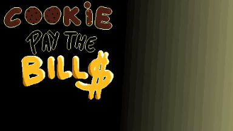
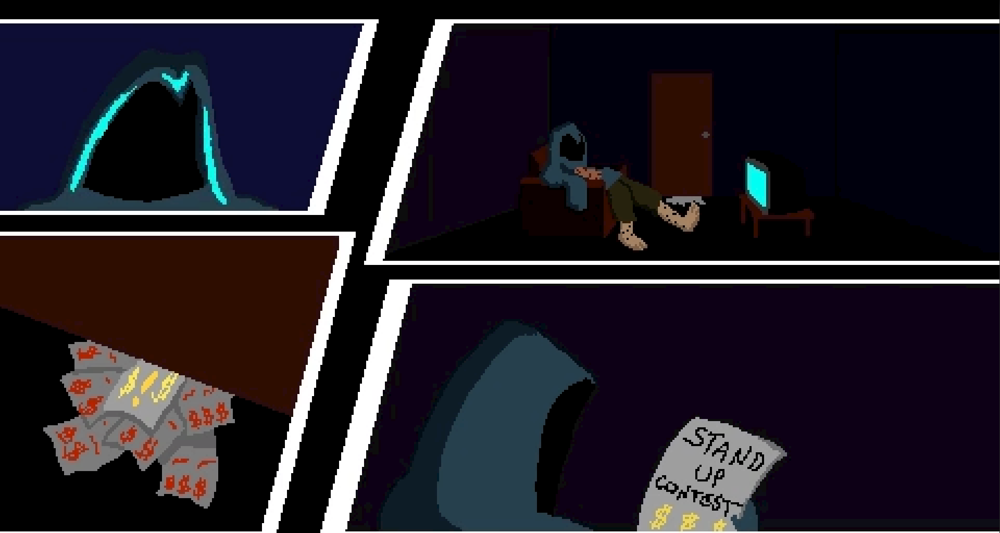

Projetos
GeoTripGeoTrip foi um projeto da cadeira de Projeto de Software II, desenvolvido em parceria com uma dupla do Chile em um experimento de intercâmbio virtual. A ideia do aplicativo é ser uma plataforma onde é possível cadastrar pontos turísticos locais e registrar check-ins quando os visita, para que você receba selos e customize o seu perfil. |


|
Cookie Pay the BillsCookie Pay the Bills é um jogo feito em uma GameJam cujo tema era "faz-me rir". No jogo o protagonista, Cookie, precisa de dinheiro para pagar as contas de casa ou ele será expulso de seu apto. Controlamos o personagem em uma competição de stand-up onde ele deve derrotar seus competidores usando ataques gasosos e garantir o grande prêmio em dinheiro que permitirá que ele se aposente. |
  |